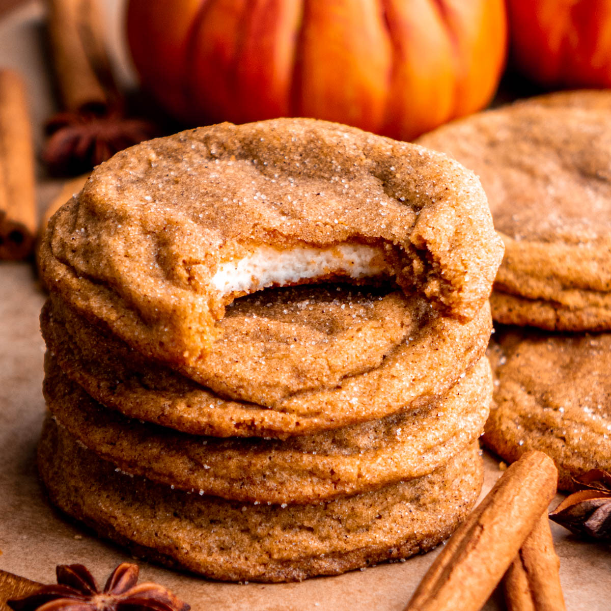

Pumpkin Cheesecake Cookies

Description
These pumpkin cheesecake cookies are wonderfully soft and chewy with a delicious cheesecake center. They taste like fall.
Ingredients
- 1 (8-ounce) package cream cheese, at room temperature
- 1/2 cup powdered sugar
- 1 1/2 teaspoons vanilla extract
- 1/2 cup canned pumpkin
- 1 3/4 cups all purpose flour
- 1 tablespoon pumpkin pie spice, divided
- 1/2 teaspoon baking soda
- 1/4 teaspoon salt
- 3/4 cup butter, softened
- 3/4 cup packed brown sugar
- 1/2 cup white sugar, divided
Directions
- Gather all ingredients. Line one tray and one baking sheet with parchment paper.
- Beat cream cheese, powdered sugar, and 1/2 teaspoon vanilla in a medium bowl with an electric mixer on medium-high speed until thoroughly combined.
- Scoop cream cheese using a tablespoon or a well-rounded 2 teaspoon scoop (#70) onto the prepared tray. You should have 18 mounds. Freeze filling mounds until frozen solid, 1 hour.
- Preheat oven to 375 degrees F (190 degrees C). Spread canned pumpkin evenly out on a plate into a 4-inch square.
- Press pumpkin with a paper towel to extract excess moisture. Repeat blotting with a new paper towel, until very little moisture is being soaked up by the towel, about 6 times. Set aside.
- Stir together flour, 2 teaspoons pumpkin pie spice, baking soda, and salt in a medium mixing bowl; set aside.
- Beat butter with an electric mixer on medium to high speed in a large bowl for 30 seconds.
- Add brown sugar and 1/4 cup white sugar. Beat until combined, scraping sides of bowl occasionally.
- Add pumpkin, and remaining 1 teaspoon vanilla; beat until combined.
- Using a wooden spoon, stir in flour mixture.
- In a small bowl mix together remaining 1/4 cup white sugar and 1 teaspoon pumpkin pie spice.
- Use a 1 1/2 tablespoon cookie scoop (#40) or rounded measuring tablespoon to portion cooking dough into 18 pieces.
- To shape each cookie, pat a portion of the dough into a 2 1/2- to 3-inch circle in the palm of your hand.
- Place a frozen ball of the cream cheese mixture into the middle of the cookie dough, pressing the dough around the filling, then rolling with your hands to form a ball.
- Roll ball in sugar and pumpkin pie spice mixture, then place on prepared baking sheet, about 3 inches apart. Repeat with remaining dough and filling. Bake the first batch in the preheated oven until cookies are set, about 12 minutes. (Chill shaped cookies while the first batch is baking.)
- Let cookies cool on the baking sheet for 5 minutes.
- Transfer cookies to wire racks; let cool completely, about 15 minutes. Place remaining cookies on parchment-lined baking sheet and bake and cool as directed.